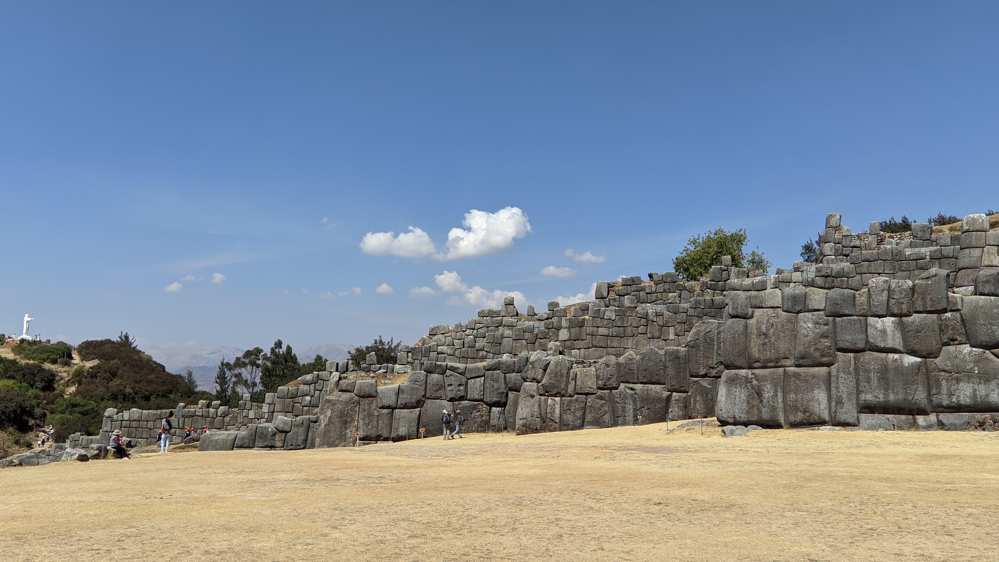
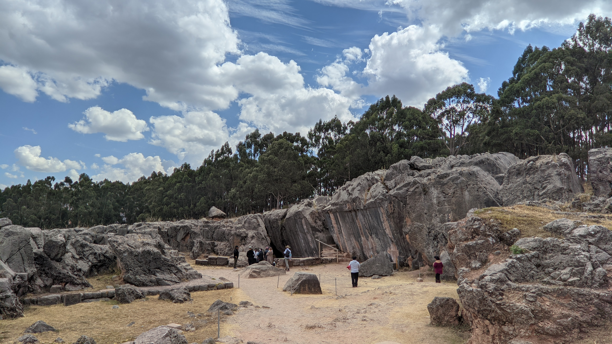
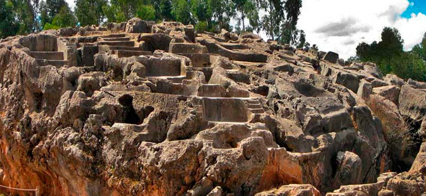
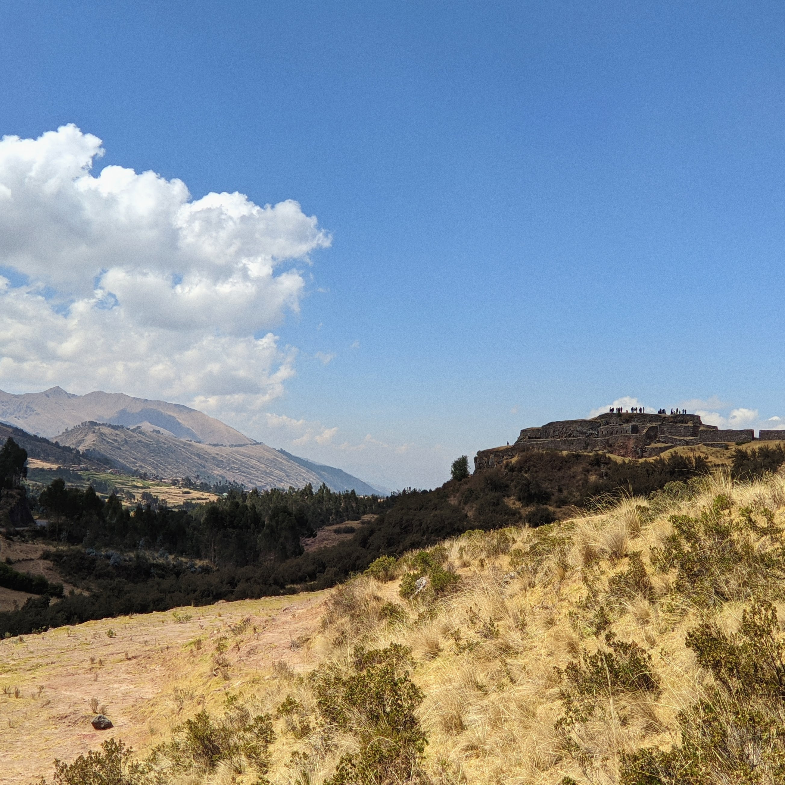
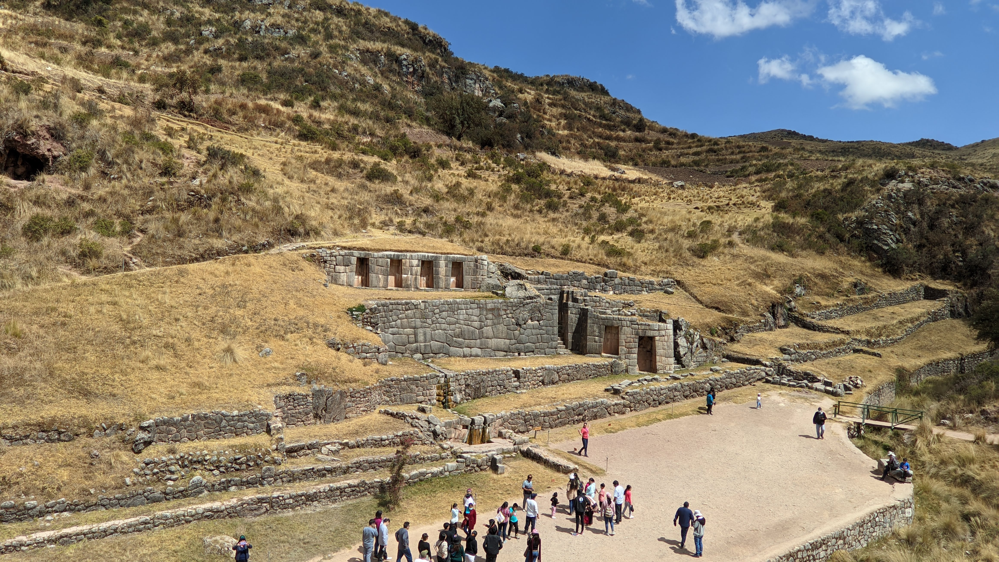
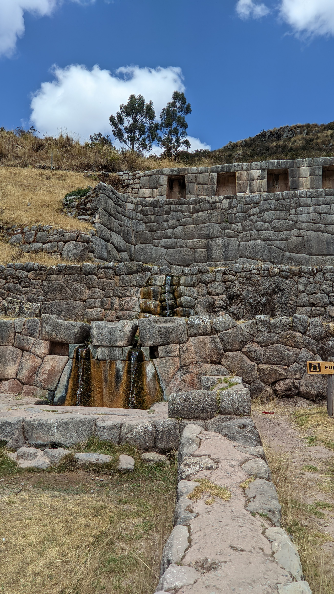

Foto tomada por: Lucas Peña
Saqsaywaman es un templo ceremonial inca. Su construcción inició en el siglo XV y fue terminada en el siglo XVI.
El templo de Saqsaywaman es considerada la mayor obra arquitectónica realizada por los incas.
En quechua Saqsaywaman significa "halcón satisfecho".
(Saqsay = satisfecho, waman = halcón).

Foto tomada por: Lucas Peña
En la actualidad no se conoce con seguridad cual era la función de estas ruinas durante el imperio Inca, pero arqueólogos e historiadores concuerdan en
en que era utilizado como lugar ceremonial, en el que se llevaban acabo sacrificios de animales y probablemente también humanos.
Su nombre en quechua significa "laberinto".

https://www.inkayniperutours.com/blog/es/qenqo-lugar-de-adoracion-a-los-dioses-incas
Foto tomada por: Lucas Peña
Puka Pukara fue utilizada como fortaleza militar por los Incas, también se desarrollaban funciones administrativas. Está compuesta por grandes muros y terrazas.
Su nombre en quechua significa "Fortaleza Roja", debido al color que el sol le da a las rocas durante los atardeceres

Foto tomada por: Lucas Peña
Tambomachay fue utilizado por los Incas como un templo de culto al agua. Está compuesto por una serie de acueductos, canales y terrazas.
No se sabe con certeza de dónde viene el agua que fluye por los canales. Las fuentes de este sitio mantienen un flujo constante de agua pura durante todo el año.

Foto tomada por: Lucas Peña